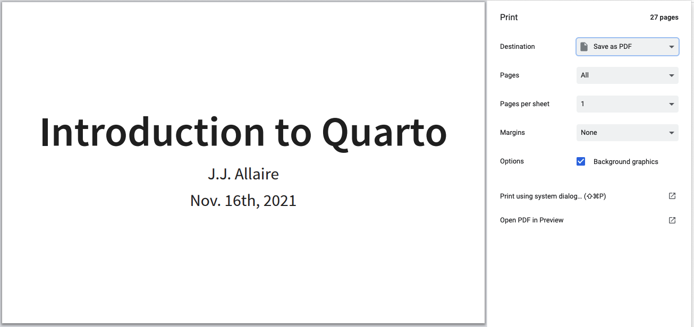
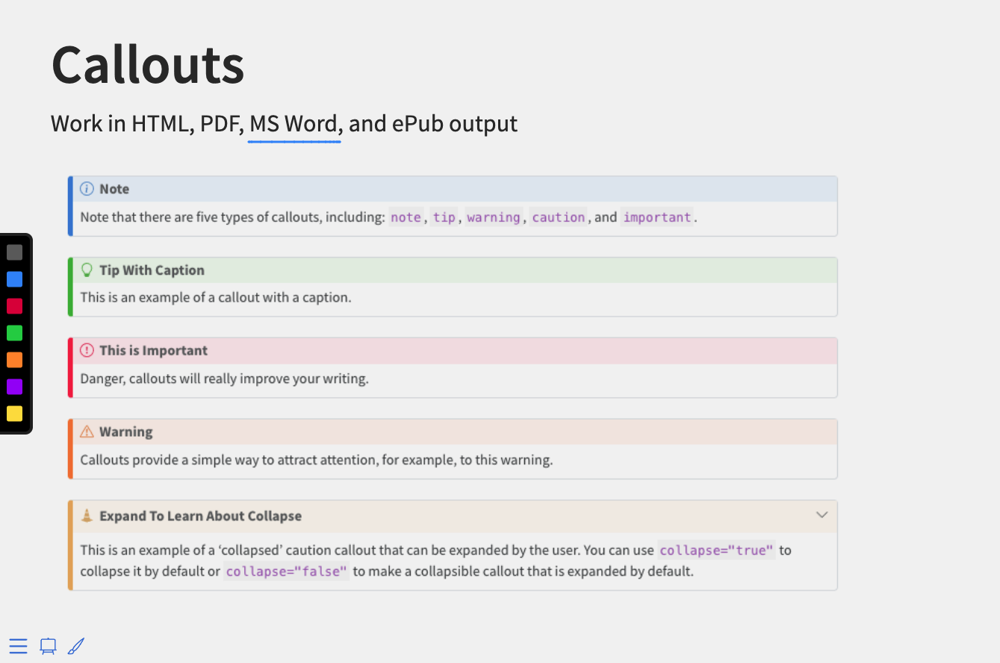
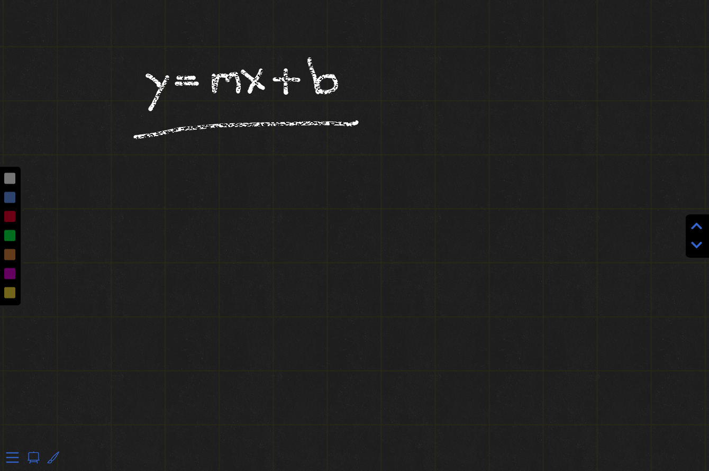

Presenting Slides
Overview
This article covers the mechanics of presenting slides with Reveal. Basic navigation is done using the following keyboard shortcuts:
| Action | Keys |
|---|---|
| Next slide | → SPACE N |
| Previous slide | ← P |
| Navigate without fragments | Alt → Alt ← |
| Jump to first/last slide | Shift → Shift ← |
You will often want to enter fullscreen mode when presenting. You can do this by pressing the F key.
In addition to basic keyboard navigation, Reveal supports several more advanced capabilities, including:
- Navigation menu and overview mode
- Speaker view (w/ speaker notes)
- Printing to PDF
- Drawing on slides & chalkboard mode
These capabilities and others are described below.
Overview Mode
Overview mode provides an alternate view that shows you a thumbnail for each slide:

You can enable Overview Mode by pressing the O key.
Speaker View
The speaker view shows the current slide along with the upcoming slide, a timer, and any speaker notes associated with the current slide:

You can enable Speaker View by pressing the S key.
You can add speaker notes to a slide using a div with class .notes. For example:
## Slide with speaker notes
Slide content
::: {.notes}
Speaker notes go here.
:::Print to PDF
Reveal presentations can be exported to PDF via a special print stylesheet.
Note: This feature has only been confirmed to work in Google Chrome and Chromium.
To Print to PDF, do the following:
- Toggle into Print View using the E key (or using the Navigation Menu)
- Open the in-browser print dialog (CTRL/CMD+P).
- Change the Destination setting to Save as PDF.
- Change the Layout to Landscape.
- Change the Margins to None.
- Enable the Background graphics option.
- Click Save 🎉
Here’s what the Chrome print dialog would look like with these settings enabled:

Print Options
There are a number of options that affected printed output that you may want to configure prior to printing:
| Option | Description |
|---|---|
show-notes |
Include speaker notes (true, false, or separate-page) |
slide-number |
Include slide numbers (true or false) |
pdf-max-pages-per-slide |
Slides that are too tall to fit within a single page will expand onto multiple pages. You can limit how many pages a slide may expand to using the pdf-max-pages-per-slide option. |
pdf-separate-fragments |
Slides with multiple fragments are printed on a single page by default. To create a page for each fragment set this option to true. |
For example, the following specifies that we want to print speaker notes on their own page and include slide numbers:
---
title: "Presentation"
format:
revealjs:
show-notes: separate-page
slide-number: true
---Chalkboard
Quarto includes a built-in version of the reveal.js-chalkboard plugin. Specify the chalkboard: true option to enable the plugin, which enables you to draw on a notes canvas on top of your slides and/or open up an empty chalkboard within your presentation:
---
title: "Presentation"
format:
revealjs:
chalkboard: true
---Here are what the notes canvas and chalkboard look like when activated:


To toggle the notes canvas on and off use the button or the C key.
To toggle the chalkboard on and off use the button or the B key.
Here are all of the keyboard shortcuts associated with the notes canvas and chalkboard:
| Action | Key |
|---|---|
| Toggle notes canvas | C |
| Toggle chalkboard | B |
| Reset all drawings | BACKSPACE |
| Clear drawings on slide | DEL |
| Cycle colors forward | X |
| Cycle colors backward | Y |
| Download drawings | D |
The following mouse and touch gestures can be used for interacting with drawings:
Click on the buttons at the bottom left to toggle the notes canvas or chalkboard
Click on the color picker at the left to change the color (the color picker is only visible if the notes canvas or chalkboard is active)
Click on the up/down arrows on the left to the switch among multiple chalkboard (the up/down arrows are only available for the chalkboard)
Click the left mouse button and drag to write on notes canvas or chalkboard
Click the right mouse button and drag to wipe away previous drawings
Touch and move to write on notes canvas or chalkboard
Touch and hold for half a second, then move to wipe away previous drawings
Restoring Drawings
The D key downloads any active drawings into a JSON file. You can then restore these drawings when showing your presentation using the src option. For example:
---
title: "Presentation"
format:
revealjs:
chalkboard:
src: drawings.json
---Chalkboard Options
The following options are available to customize the behavior and appearance of the chalkboard:
| Option | Description |
|---|---|
theme |
Can be set to either chalkboard (default) or whiteboard. |
boardmarker-width |
The drawing width of the boardmarker; larger values draw thicker line. Defaults to 3. |
chalk-width |
The drawing width of the chalk; larger values draw thicker lines. Defaults to 7. |
chalk-effect |
A float in the range [0.0, 1.0], the intensity of the chalk effect on the chalk board. Full effect (default) 1.0, no effect 0.0. |
src |
Optional file name for pre-recorded drawings (download drawings using the D key). |
read-only |
Configuration option to prevent changes to existing drawings. If set to true no changes can be made, if set to false false changes can be made, |
buttons |
Add chalkboard buttons at the bottom of the slide (defaults to true) |
transition |
Gives the duration (in milliseconds) of the transition for a slide change, so that the notes canvas is drawn after the transition is completed. |
For example, the following configuration specifies that we want to use the whiteboard theme with a (thicker) boardmarker width:
---
title: "Presentation"
format:
revealjs:
theme: whiteboard
boardmarker-width: 5
---